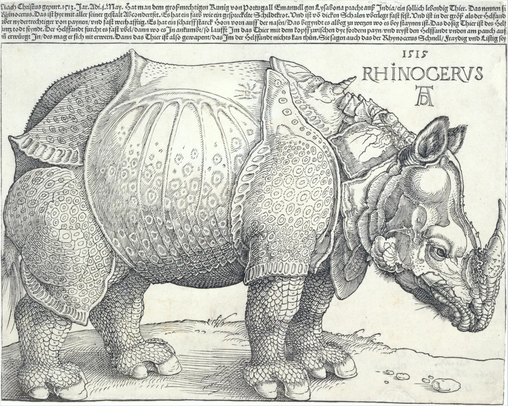
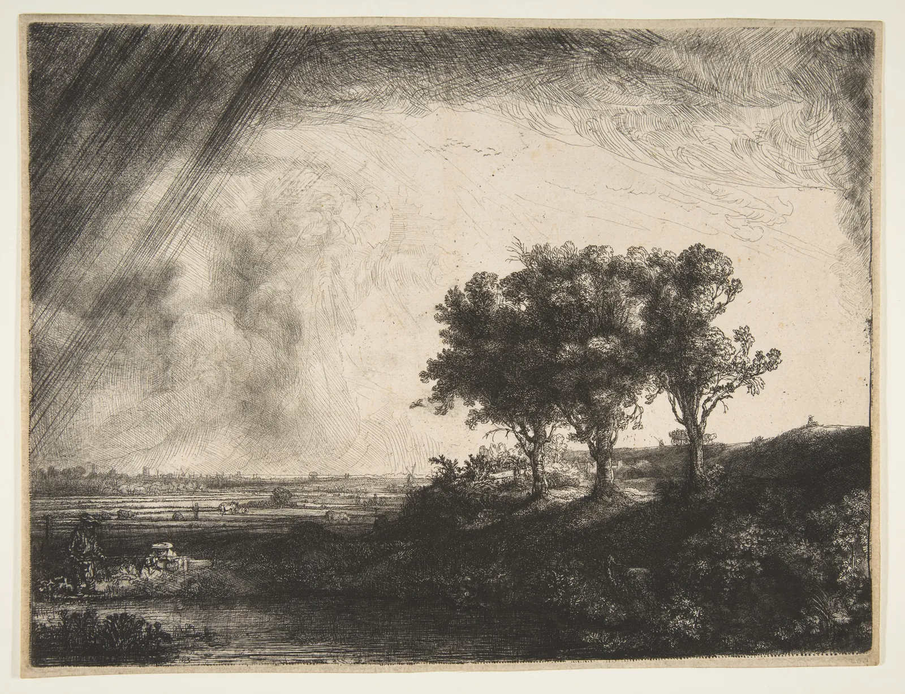
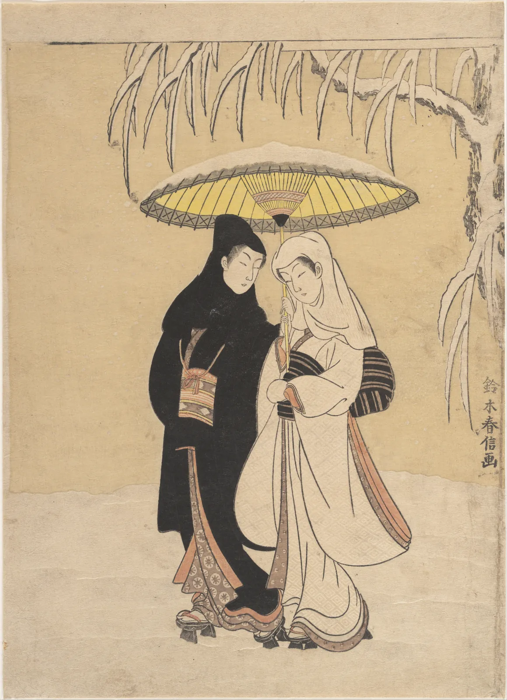
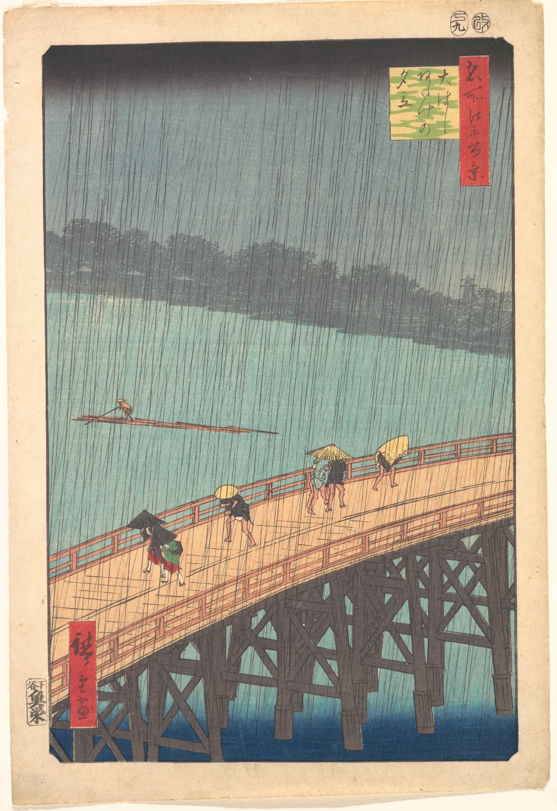
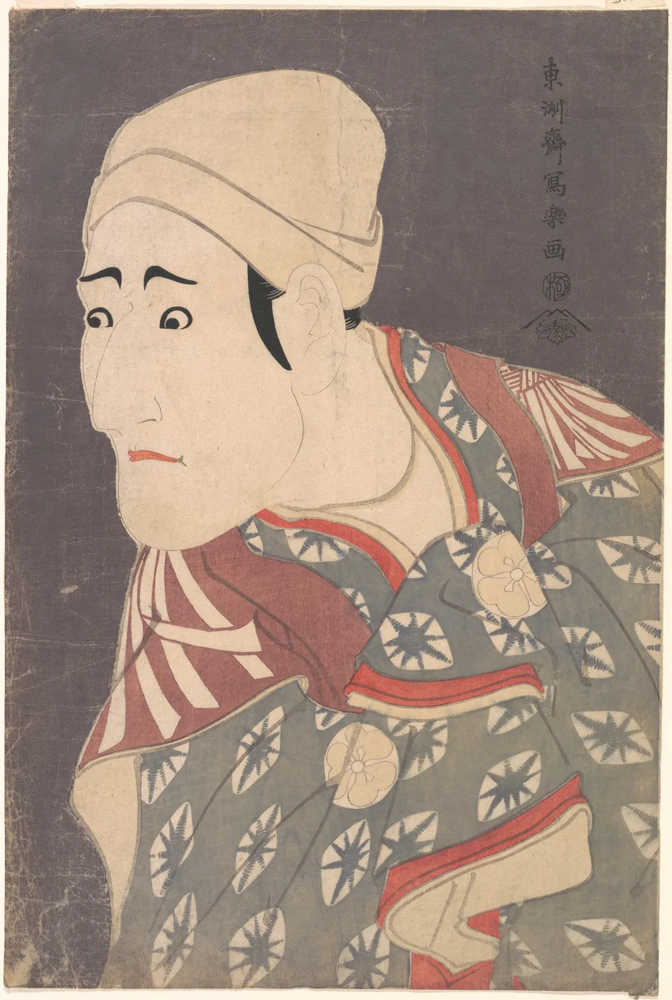

고무 도장에 잉크를 묻혀 종이에 찍어 본 적이 있다면 이미 판화를 해 본 것이다. 도장의 글자가 거꾸로 새겨져 있다는 것도, 잉크를 많이 묻히면 번지고 적게 묻히면 듬성듬성 찍힌다는 것도 안다. 판화는 이 단순한 일을 수백 년 동안 정교하게 다듬은 기술이다. 그리고 한 판에서 같은 그림을 수십, 수백 장 찍을 수 있다는 사실은 그림이 누구의 것인지, 어디까지 퍼질 수 있는지를 바꿨다. 이 장은 판을 깎고 새기고 그리는 방식부터, 일본의 다색 목판 우키요에가 화면을 짜는 법, 그리고 그 판화가 바다를 건너 유럽 화가들의 눈을 바꾼 이야기까지 따라간다.
볼록판·오목판·평판이 잉크를 어디에 두는지 구별하고, 찍으면 왜 좌우가 뒤집히는지 직접 확인한다.
목판의 굵은 선과 동판의 가는 선이 각각 어떻게 명도를 만드는지 해칭 시뮬레이터로 잰다.
다색 목판(니시키에)의 분업과 견당, 판을 나눠 찍는 순서를 이해한다.
호쿠사이·히로시게·샤라쿠의 판화에서 큰 근경, 잘린 화면, 평평한 색면의 구도를 읽는다.
자포니즘이 유럽 미술에 남긴 흔적을 작품으로 확인하되, 영향 관계를 과장하지 않는다.
판화에서 "원본"과 "복제"가 무엇을 뜻하는지 쇄와 상태의 개념으로 설명한다.
잉크는 어디에 있는가: 판화의 세 갈래
판화(Printmaking)는 판에 잉크를 올려 종이에 옮기는 그림이다. 판을 어떻게 만드는가보다 먼저 물어야 할 것은 "잉크가 판의 어디에 있는가"다. 이 질문 하나로 판화는 크게 세 갈래로 나뉜다. 20세기에 널리 퍼진 실크스크린처럼 구멍으로 잉크를 통과시키는 공판도 있지만, 이 장에서는 19세기까지의 세 갈래를 다룬다.
그림 1. 판화의 세 갈래. 잉크를 검은색으로 표시했다. 볼록판은 남긴 면이, 오목판은 판 홈이, 평판은 화학적으로 잉크를 받도록 만든 자리가 찍힌다. 세 방식 모두 판과 종이가 마주 보므로 찍힌 그림은 판의 좌우가 뒤집힌 모습이다.
판화의 역사는 동아시아에서 먼저 길게 쓰였다. 1966년 경주 불국사 석가탑에서 나온 『무구정광대다라니경』은 8세기 중엽 무렵의 목판 인쇄물로 보는 견해가 많고, 현존하는 가장 오래된 목판 인쇄물 가운데 하나로 꼽힌다. 13세기 고려에서는 몽골 침입기에 8만 장이 넘는 경판, 곧 『팔만대장경』(고려대장경)을 새겼고 지금도 합천 해인사에 있다. 이런 판들은 그림보다 글을 위한 것이었지만, 글자를 거꾸로 새기고 먹을 칠해 종이를 문지르는 원리는 그림 판화와 같다. 중국과 일본에서도 불교 경전과 그 첫머리의 그림(변상도)이 목판으로 널리 찍혔다.
목판: 남길 것만 남기기
목판화(Woodcut)는 나무판에 그림을 그리고, 찍히지 않을 부분을 칼과 끌로 파내 선과 면만 볼록하게 남긴 판이다. 남긴 면에 잉크를 바르고 종이를 덮어 문지르거나 눌러 찍는다. 선 하나를 "그으려면" 그 양옆을 모두 파내야 하므로, 목판의 선은 대개 굵고 단단하며, 가는 선을 많이 쓰려면 그만큼 손이 많이 간다.

그림 2. 알브레히트 뒤러, 「코뿔소」, 1515. 1515년 인도 구자라트에서 포르투갈 왕에게 보낸 코뿔소가 리스본에 도착했다. 뒤러는 이 동물을 직접 보지 못하고, 리스본에서 온 스케치와 편지를 바탕으로 이 판을 만든 것으로 알려져 있다. 판금을 이어 붙인 듯한 가죽과 등 위의 작은 뿔은 실제 인도코뿔소와 다르다. 그런데도 이 판화는 여러 쇄를 거듭하며 이후 수백 년 동안 유럽에서 코뿔소의 모습으로 퍼졌다. 가죽의 비늘과 점, 다리의 주름이 모두 파내고 남긴 볼록한 선이다.메트로폴리탄 미술관 소장(Gift of Junius Spencer Morgan, 1919), 목판화. 화면 21.3 × 29.5 cm. 공공 도메인(The Met Open Access, CC0). 소장처 작품 페이지 · 크레딧
뒤러(Albrecht Dürer, 1471–1528)의 시대에 목판은 대개 분업으로 만들었다. 화가가 판 위에 그림을 그리면, 판을 전문으로 깎는 장인이 선 둘레를 파냈다고 보는 것이 일반적이다. 그래서 뒤러의 목판 선은 "뒤러가 그은 선을 다른 사람이 남긴 선"이다. 이 분업은 뒤에서 볼 일본의 다색 목판에서 더 정교해진다.
아래에서 직접 판을 깎아 본다. 왼쪽 판 위를 끌면 그 자리가 파인다. 오른쪽은 그 판으로 찍은 종이다. 처음에는 밑그림이 바로 쓴 글자로 그려져 있다. "밑그림 둘레 자동으로 파기"를 누르고 찍힌 모습을 본 다음, 밑그림을 뒤집어 다시 해 본다.
SIMULATOR
깎아서 찍기: 볼록판과 거울상
왼쪽 판 위를 끌어 판다
파낸 면적—
찍힌 잉크 면적(종이 대비)—
종이에 읽히는 글자—
해볼 것: ① "밑그림 둘레 자동으로 파기"를 누른다. 판에는 "판화"가 바로 읽히는데, 종이에는 좌우가 뒤집혀 찍힌다. 판의 약 80%를 파내야 글자 두 자가 남는다. ② "밑그림 뒤집어"로 바꾸고 다시 자동으로 판다. 이번에는 종이에서 바로 읽힌다. 도장과 목판은 모두 거꾸로 새긴다. ③ 잉크 양을 0.1까지 내린다. 남긴 면에도 잉크가 다 묻지 않아 나뭇결처럼 듬성듬성 찍힌다. 칼 폭을 8로 키워 손으로 파 보면 가는 획 옆을 파다가 획까지 떨어져 나가기 쉽다. 목판의 선이 굵어지는 이유다. (모형의 가정: 판은 가로세로 칸으로 나눈 격자이고, 파낸 칸은 찍히지 않는다. 잉크 양이 적으면 남은 칸도 무작위로 비게 했다. 실제 나뭇결과 바렌의 압력은 다루지 않는다.)
목판은 판을 만드는 데 손이 많이 가지만, 일단 만들면 나무가 버티는 한 수백 장을 찍을 수 있고, 활자와 함께 한 쪽에 짜 넣어 책을 찍을 수 있었다. 15세기 유럽에서 인쇄 책이 퍼지면서 목판 삽화도 함께 퍼졌다. 반대로 판이 닳거나 금이 가면 같은 판이라도 뒤에 찍은 장일수록 선이 끊기고 굵어진다. 메트로폴리탄 미술관에는 뒤러가 죽고 한참 뒤인 1620년 이후에 같은 「코뿔소」 판으로 찍고 색판을 더한 판본도 있다. 같은 판에서 나온 그림이라도 "언제 찍었는가"가 중요한 이유다.
동판: 홈에 숨은 잉크
오목판(Intaglio)은 금속판에 홈을 파고, 잉크를 홈 안에 밀어 넣은 뒤 판의 겉면을 깨끗이 닦아 낸다. 젖은 종이를 덮고 센 압력의 프레스로 누르면 종이가 홈 속의 잉크를 빨아낸다. 홈을 파는 방법에 따라 이름이 나뉜다.
인그레이빙(Engraving): 뷰린이라는 날카로운 끌을 손으로 밀어 판에 V자 홈을 깎는다. 선이 깔끔하고 끝이 뾰족하게 가늘어진다. 힘과 숙련이 많이 드는 기법이다.
에칭(Etching): 판에 산에 녹지 않는 막(그라운드)을 바르고 바늘로 막을 긁어 그림을 그린 뒤, 산에 담가 긁힌 자리만 부식시킨다. 연필로 그리듯 자유롭게 선을 그을 수 있고, 산에 담그는 시간으로 선의 굵기와 짙기를 조절한다.
드라이포인트(Drypoint): 바늘로 판을 직접 긁는다. 홈 가장자리에 금속 거스러미(버)가 일어나 잉크를 머금으므로 선이 벨벳처럼 번진다. 버는 몇 번 찍으면 눌려 닳기 때문에 처음 찍은 몇 장이 가장 진하다.
그림 3. 알브레히트 뒤러, 「서재의 성 히에로니무스」, 1514. 인그레이빙. 벽과 바닥의 회색은 모두 가는 평행선과 그 위에 겹친 선(크로스해칭)으로 만들었다. 뒤러의 대표적인 동판화 세 점 가운데 하나로 꼽힌다.메트로폴리탄 미술관 소장(Fletcher Fund, 1919), 인그레이빙, 24.6 × 18.9 cm. 공공 도메인(The Met Open Access, CC0). 소장처 작품 페이지 · 크레딧

그림 4. 렘브란트 판 레인, 「세 그루 나무」, 1643. 에칭에 인그레이빙과 드라이포인트를 더했다. 왼쪽 하늘의 굵은 사선 빗줄기, 나무 둘레의 짙고 부드러운 어둠과, 먼 평야의 성긴 가는 선이 한 판 안에 함께 있다.메트로폴리탄 미술관 소장(H. O. Havemeyer Collection, Bequest of Mrs. H. O. Havemeyer, 1929), 에칭, 인그레이빙, 드라이포인트. 공공 도메인(The Met Open Access, CC0). 소장처 작품 페이지 · 크레딧
판화에는 회색 잉크가 없다. 검은 잉크와 흰 종이뿐이다. 회색은 선의 간격과 굵기, 겹의 수로 만든다. 멀리서 보면 눈이 검은 선과 흰 틈을 섞어 회색으로 본다. 이것은 ColorBook에서 본 광학 혼색과 같은 원리다. 아래에서 선을 그어 회색을 만들어 본다. 오른쪽 견본은 같은 잉크 비율을 고르게 칠했을 때의 회색이다.
SIMULATOR
해칭으로 명도 만들기
잉크가 덮은 비율—
멀리서 본 명도 L*—
선 하나 = 겹 하나일 때 예상—
해볼 것: ① 처음 값(간격 8, 굵기 1.25, 한 겹)에서 잉크는 종이의 약 20%를 덮고, 멀리서 본 명도는 L* 약 87이다. 꽤 옅은 회색이다. ② 겹 수를 2, 3, 4로 올린다. 명도는 L* 87 → 80 → 73 → 67로, 한 겹마다 내려가는 폭이 7, 7, 6으로 조금씩 줄어든다. 이미 덮인 자리에 선이 겹치기 때문이다. 예상 칸은 선이 서로 독립이라고 보고 계산한 덮임으로, 화면의 선 가장자리가 부드럽게 번지는 만큼 실제 칸보다 조금 작게 나온다. ③ 한 겹으로 돌아가 선 간격을 2까지 좁힌다. 선 사이 틈이 거의 사라져 L* 약 52의 짙은 회색 면이 되고, 더는 "선으로 만든 회색"으로 보이지 않는다. 뒤러와 렘브란트는 이 끝 직전에서 멈춘다. "멀리서 보기"를 켜고 끄며 같은 L*의 견본과 비교한다. (명도는 잉크 #1d1b1a와 종이 #f4efe4를 덮인 비율대로 선형광에서 평균한 값이다. 실제 동판 선의 잉크 번짐, 종이의 결은 다루지 않는다.)
\(c_1\): 한 겹의 선이 덮는 비율(선 굵기 ÷ 선 간격), \(c_n\): 방향이 다른 \(n\)겹을 겹쳤을 때 덮는 비율(겹들이 서로 독립이라고 볼 때의 근사), \(Y\): 멀리서 보이는 상대 휘도. 명도 L*은 이 \(Y\)로 계산한다. 겹이 늘수록 이미 덮인 자리와 겹쳐 효과가 줄어든다.
이 계산은 동판화가들이 손으로 알던 것을 숫자로 옮긴 것이다. 밝은 회색은 성긴 한 겹으로, 중간 회색은 두 겹으로 충분하지만, 가장 깊은 어둠은 겹만 늘려서는 잘 얻어지지 않는다. 렘브란트가 「세 그루 나무」의 가장 짙은 곳에 드라이포인트를 더한 것도 이렇게 보면 이해가 된다. 버가 머금은 잉크가 선 사이 틈까지 번져, 선을 더 긋지 않고도 어둠을 깊게 한다.
석판: 물과 기름
석판화(Lithography)는 1790년대 말 독일의 알로이스 제네펠더(Alois Senefelder)가 고안한 것으로 알려져 있다. 고운 석회암 판에 기름 성분의 크레용이나 먹으로 그림을 그리고, 판을 화학적으로 처리한 뒤 물을 적신다. 기름진 그림 자리는 물을 밀어내고, 그림이 없는 자리는 물을 머금는다. 여기에 기름 잉크를 굴리면 잉크는 그림 자리에만 붙는다. 판을 파지 않으므로 화가가 종이에 그리듯 판에 직접 그릴 수 있고, 크레용의 질감과 붓의 번짐이 그대로 찍힌다.
19세기 후반에는 색마다 돌을 따로 준비해 여러 색을 겹쳐 찍는 다색 석판이 큰 포스터를 거리에 내걸었다. 툴루즈로트레크의 포스터는 그 대표적인 예이며, 동시에 일본 판화의 영향이 뚜렷하게 보이는 그림이기도 하다. 이 그림은 자포니즘 절에서 다시 본다.
판의 종류가 그림의 생김새를 정한다
같은 사람을 그려도 목판에서는 선 둘레를 파내야 하므로 굵고 각진 선과 넓은 면이 나오기 쉽고, 인그레이빙에서는 뾰족하게 가늘어지는 규칙적인 선의 그물이, 에칭에서는 자유롭고 떨리는 선이, 석판에서는 크레용의 거친 결과 붓의 번짐이 나온다. 그래서 판화를 볼 때는 "무엇을 그렸는가" 다음에 "어떤 판으로 찍었는가"를 묻는다. 선의 끝이 뾰족한가(인그레이빙), 끝이 뭉툭하고 고른가(에칭), 선 가장자리가 번졌는가(드라이포인트), 선이 아니라 결이 보이는가(석판), 면 가장자리에 칼자국이 있는가(목판). 확대경 하나로 판의 종류를 꽤 많이 가려낼 수 있다.
다색 목판: 니시키에의 공정
일본 에도 시대(1603–1868)의 도시에서는 배우, 유녀, 명소, 이야기를 그린 값싼 그림이 대량으로 팔렸다. 덧없는 세상, 곧 지금 이곳의 즐거움을 그린 그림이라는 뜻에서 이를 우키요에(Ukiyo-e, 浮世繪)라 부른다. 처음에는 먹으로만 찍거나 찍은 뒤 손으로 색을 칠했고, 두세 가지 색판을 더한 판화도 있었다. 1765년 무렵 에도의 취미가들 사이에서 정교한 그림 달력(에고요미)을 주고받는 유행이 일었고, 그 주문을 계기로 스즈키 하루노부(Suzuki Harunobu, 1725–1770) 등이 여러 색판을 정확히 겹쳐 찍은 판화를 내놓았다. 비단처럼 화려하다 하여 니시키에(Nishiki-e, 錦繪)라는 이름이 붙었다.

그림 5. 스즈키 하루노부, 「눈 속을 걷는 연인(까마귀와 백로)」, 1764–72. 검은 옷과 흰 옷의 두 사람이 우산 하나를 함께 쓴다. 흰 옷과 쌓인 눈에는 잉크를 묻히지 않은 판을 세게 눌러 종이를 도드라지게 하는 가라즈리(Karazuri, 空摺)가 쓰였다고 소장처는 기록한다. 색이 아니라 종이의 요철로 눈의 두께를 나타낸 것이다. 사진으로는 거의 보이지 않으므로 실물을 비스듬한 빛에서 볼 때 알아볼 수 있다.메트로폴리탄 미술관 소장(The Howard Mansfield Collection, Purchase, Rogers Fund, 1936), 목판화, 종이에 먹과 채색, 가라즈리. 28.6 × 20.6 cm. 공공 도메인(The Met Open Access, CC0). 소장처 작품 페이지 · 크레딧
니시키에는 한 사람이 만드는 그림이 아니었다. 출판을 기획하고 돈을 대고 파는 판원(한모토), 밑그림을 그리는 화가(에시), 판을 깎는 각수(호리시), 종이에 찍는 인쇄공(스리시)이 일을 나눴다. 화가의 밑그림은 판 위에 뒤집어 붙여 깎는 과정에서 사라졌다. 각수는 먼저 윤곽선만 남긴 주판(Key block)을 깎고, 그 주판으로 찍은 교정쇄 위에 화가가 색마다 칠할 자리를 표시하면, 색마다 판을 하나씩 따로 깎았다.
그림 6. 분업과 견당. 판마다 같은 위치에 새긴 작은 턱, 곧 견당(Kentō, 見當)이 여러 판을 맞추는 열쇠다. 인쇄공은 종이의 모서리를 L자 견당에, 한 변을 일자 견당에 맞춰 내려놓고 바렌으로 문지른다. 판의 크기와 견당 모양은 판원과 시기에 따라 달랐다. 이 그림은 원리만 그렸다.
색판은 보통 밝은 색, 좁은 면부터 찍고 짙은 색, 넓은 면을 나중에 찍었다고 설명된다. 어두운 색이 밝은 색을 덮기 쉽고, 넓은 면을 나중에 찍어야 앞서 찍은 색의 어긋남이 덜 보이기 때문이다. 히로시게의 하늘처럼 위에서 아래로 색이 옅어지는 효과는 판에 물과 잉크를 붓으로 고르지 않게 펴 바르는 보카시(Bokashi, ぼかし)로 만들었다. 아래에서는 실제 판화를 몇 개의 색판으로 나눠, 한 판씩 찍어 나가는 과정을 흉내 낸다.
SIMULATOR
판 나누기: 한 판씩 찍어 쌓기
지금 찍은 판의 색 · 면적—
원본과의 평균 색 차이 ΔE—
아직 종이 그대로인 면적—
해볼 것: ① 호쿠사이를 색판 6개로 나누고 "찍은 판"을 0에서 하나씩 올린다. 바탕의 옅은 색이 먼저 깔리고, 마지막 판들에서 파도의 짙은 남색과 윤곽이 화면을 묶는다. ② "짙은 판부터"로 바꿔 같은 일을 한다. 처음 몇 판만 찍었을 때는 윤곽과 그늘만 있는 흑백 그림처럼 보인다. 순서는 최종 그림을 바꾸지 않지만(이 모형에서는 판이 서로 겹치지 않는다), 인쇄공이 중간에 보는 그림과 어긋남이 눈에 띄는 정도를 바꾼다. ③ 색판 수를 2로 내리면 어떤 판화든 종이와 먹 두 색만 남는다(호쿠사이의 평균 색 차이 ΔE 6.6). 9까지 올려도 원본과의 색 차이가 0이 되지 않는다(ΔE 2.2). 실제 니시키에는 한 색을 여러 번 겹쳐 찍거나 보카시로 한 판 안에서 색을 바꾸기 때문이다. (판 나누기는 OKLab k-평균(ART.kmeans)으로 사진의 색을 묶은 것이다. 실제 판의 수나 색과는 다르다. 사진 속 색은 종이의 변색과 촬영 조건을 포함한다.)
우키요에의 구도: 크게 가까이, 과감하게 자르기
19세기 전반의 풍경 판화는 우키요에의 주제를 크게 넓혔다. 가쓰시카 호쿠사이(Katsushika Hokusai, 1760–1849)의 『후가쿠 36경』(1830–32년경)과 우타가와 히로시게(Utagawa Hiroshige, 1797–1858)의 『명소 에도 백경』(1856–58) 같은 연작은 여행과 명소 구경의 유행 속에서 많이 팔렸다. 『후가쿠 36경』의 파랑에는 당시 유럽에서 들어온 합성 안료 프러시안 블루가 쓰였다고 널리 알려져 있다.
그림 7. 가쓰시카 호쿠사이, 「가나가와 앞바다의 파도 아래」(『후가쿠 36경』 중), 1830–32년경. 가까운 파도가 화면의 대부분을 차지하고, 연작의 주인공인 후지산은 파도 골 사이에 아주 작게 놓였다.메트로폴리탄 미술관 소장(H. O. Havemeyer Collection, Bequest of Mrs. H. O. Havemeyer, 1929), 목판화, 종이에 먹과 채색. 공공 도메인(The Met Open Access, CC0). 소장처 작품 페이지 · 크레딧

그림 8. 우타가와 히로시게, 「오하시 다리와 아타케의 소나기」(『명소 에도 백경』 중), 1857. 다리가 화면 밖에서 들어와 밖으로 나간다. 하늘 위쪽의 먹구름은 보카시로 짙어졌다 옅어지고, 빗줄기는 서로 다른 각도의 가는 선으로 겹쳐 찍었다.메트로폴리탄 미술관 소장(The Howard Mansfield Collection, Purchase, Rogers Fund, 1936), 목판화, 종이에 먹과 채색. 공공 도메인(The Met Open Access, CC0). 소장처 작품 페이지 · 크레딧
두 그림에는 이 시기 풍경 판화의 구도 요령이 여럿 들어 있다. 첫째, 가까운 것을 아주 크게 둔다. 호쿠사이의 파도, 『명소 에도 백경』의 여러 장에서 화면 앞을 막아선 나뭇가지나 기둥은, 먼 명소를 그 사이로 들여다보게 만든다. 둘째, 화면 테두리가 대상을 자른다. 다리, 배, 사람이 화면 밖으로 이어지므로 화면은 세계의 한 조각처럼 보인다. 셋째, 평평한 색면과 윤곽이 깊이보다 무늬를 먼저 보게 한다. 이 셋은 18세기에 서양 투시도법을 받아들인 우키에(3장의 선 원근법과 비교)를 거치며 일본식으로 다시 짠 공간이라고 설명되기도 한다.
첫째 요령, 가까운 것을 크게 두는 일을 직접 해 본다. 아래 장면은 먼 산과 가까운 기둥 하나로 이루어진다. 카메라에서 기둥까지의 거리를 바꾸고, 기둥을 끌어 화면 안의 자리를 옮긴다.
SIMULATOR
가까운 것을 크게: 근경과 먼 산
기둥을 좌우로 끈다
기둥이 차지한 화면 폭—
기둥 높이 ÷ 산의 겉보기 높이—
화면 밖으로 잘린 기둥—
해볼 것: ① 처음 값(기둥까지 3 m)에서 기둥은 화면 위쪽 밖으로 잘리고 화면 폭의 약 8%를 차지한다. 기둥의 높이는 먼 산의 겉보기 높이의 30배다. ② 거리를 150 m로 늘린다. 기둥은 산보다 작아지며(×0.6) 그냥 풍경 속의 물건이 된다. 화면에 "앞"과 "뒤"를 가르는 막이 사라진다. ③ 거리를 0.4 m까지 줄인다. 기둥이 화면 폭의 절반 넘게 덮어 무엇을 보여 주는 그림인지 알 수 없게 된다. 근경은 크게 두되 먼 곳을 들여다볼 틈을 남겨야 한다. 기둥을 화면 가장자리로 끌어 보면, 화면 테두리가 기둥을 자르며 그 틈이 넓어진다. (모형의 가정: 핀홀 카메라, 세로 화각 약 46°. 기둥은 높이 6 m, 폭 0.3 m, 산은 30 km 앞 높이 2,000 m. 수평선은 눈높이다.)

그림 9. 도슈사이 샤라쿠, 「가부키 배우 모리타 간야 8세(가마꾼 역)」, 1794년 5월. 배우의 얼굴과 상반신을 화면 가득 크게 그린 오쿠비에(Ōkubi-e, 大首繪)다. 배경은 아무것도 그리지 않고 운모 가루를 섞은 바탕으로 칠해 은은히 반짝이게 했다. 샤라쿠는 1794~95년의 열 달 남짓 동안만 작품을 낸 것으로 알려져 있고, 그가 누구였는지는 지금도 여러 설이 있다.메트로폴리탄 미술관 소장(Harris Brisbane Dick Fund and Rogers Fund, 1949), 목판화, 종이에 먹, 채색, 흰 운모. 38.1 × 25.4 cm. 공공 도메인(The Met Open Access, CC0). 소장처 작품 페이지 · 크레딧
판화 밑그림은 세 번 뒤집어 본다
한도경은 목판 수업을 할 때 밑그림을 다 그리면 세 번 확인하게 한다. 한 번은 종이를 뒤집어 창에 비춰 본다. 찍었을 때의 모습이다. 오른손잡이가 그린 사람이 왼손잡이가 되고, 글자가 거꾸로 되며, 왼쪽에서 오른쪽으로 흐르던 구도가 반대로 흐른다. 두 번째로 색마다 따로 종이를 대고 칠할 자리만 따라 그린다. 겹치는 자리가 너무 많으면 판을 하나 줄인다. 세 번째로 가장 짙은 판 하나만 먹으로 칠해 본다. "주판 하나만으로도 그림이 서야 해. 색은 그다음이야." 우키요에의 주판이 윤곽만으로도 그림을 이루는 것과 같은 요령이다.
자포니즘: 바다를 건넌 판화
1850년대에 일본이 서양과의 교역을 넓히자, 우키요에와 일본 공예품이 유럽으로 흘러 들어갔다. 1867년 파리 만국박람회에는 일본이 공식으로 참가했다. 파리의 화가와 비평가들은 판화를 사 모았고, 일본 미술에 대한 이 열광을 자포니즘(Japonisme)이라 부른다. 1870년대 프랑스 비평가 필리프 뷔르티(Philippe Burty)가 쓰기 시작한 말로 알려져 있다.
흔적은 작품에 분명히 남아 있다. 빈센트 반 고흐는 1887년 히로시게의 「오하시 다리와 아타케의 소나기」(그림 8)를 유화로 옮겨 그렸고(반 고흐 미술관 소장), 클로드 모네는 지베르니의 집에 일본 판화를 많이 걸어 두었다. 휘슬러, 드가, 메리 커샛도 일본 판화의 구도와 평면을 자기 방식으로 받아들였다(8장). 그러나 "인상주의는 일본 판화에서 나왔다"고 말하는 것은 지나치다. 화가들은 이미 스스로 찾고 있던 것, 곧 평평한 색면, 높은 시점, 과감한 잘림을 일본 판화에서 확인하고 힘을 얻었다고 보는 편이 많은 연구의 결론에 가깝다.
그림 10. 앙리 드 툴루즈로트레크, 「디방 자포네」, 1892–93. "일본식 소파"라는 이름의 파리 카바레 포스터다. 넓은 검정 면과 노랑, 굵은 윤곽, 비스듬히 화면을 가르는 콘트라베이스, 그리고 화면 위쪽에서 머리가 잘린 무대 위의 가수(긴 검은 장갑으로 누구인지 알아볼 수 있다고 흔히 설명된다)는 우키요에의 평면과 잘림을 떠올리게 한다. 판의 종류로는 석판이다.메트로폴리탄 미술관 소장(Bequest of Clifford A. Furst, 1958), 4색 석판화. 공공 도메인(The Met Open Access, CC0). 소장처 작품 페이지 · 크레딧
"평평한 색면"이라는 말을 숫자로 재 볼 수 있을까. 아래 시뮬레이터는 그림의 각 자리가 둘레와 색이 거의 같은지(평평한지)를 재서, 평평한 면이 화면의 몇 %인지 보여 준다. 유화 한 점(5장의 페르메이르)과 동판화 한 점을 함께 넣었다.
SIMULATOR
평평한 색면은 얼마나 넓은가
평평한 면의 비율—
일곱 점 중 순위—
평평한 면의 가장 흔한 색—
해볼 것: ① 기준 ΔE 4에서 일곱 점을 차례로 본다. 순위는 아래 표와 같다. 예상과 달리 페르메이르의 유화(84%)가 1위이고, 호쿠사이(59%)가 꼴찌다. ② 평평한 곳 칠하기를 켠 채 페르메이르와 호쿠사이를 번갈아 본다. 페르메이르의 벽은 아주 부드럽게 변하는 그러데이션이라 "둘레와 거의 같다"는 기준을 쉽게 통과한다. 렘브란트의 에칭(77%)은 아무것도 찍지 않은 넓은 종이가 평평하게 재진다. 호쿠사이는 파도 무늬가 촘촘하고 종이의 결과 얼룩이 사진에 그대로 찍혀 평평하지 않다고 재진다. 이 지표는 "매끄러움"을 잴 뿐, 사람이 말하는 "색면"을 재지 못한다. ③ 기준을 12로 올리면 거의 모든 그림이 평평해지고, 1로 내리면 종이의 결과 사진의 잡티 때문에 어느 그림도 평평하지 않다. 숫자는 기준에 따라 달라지므로 순위를 보는 편이 낫다. (평평함: 긴 변 200 px로 줄인 이미지에서 각 화소의 OKLab 색과 둘레 5 × 5 화소 평균의 차이를 ΔE(OKLab 거리 × 100)로 잰 값이 기준보다 작은 곳. 이 책의 단순한 지표다.)
순위
작품
평평한 면
계산 중…
측정은 예상을 배반했다. 이것도 쓸모 있는 결과다. 사람이 우키요에에서 보는 "평평한 색면"은 둘레와 색이 같은 화소가 많다는 뜻이 아니었다. 오히려 몇 안 되는 색이 경계에서 갑자기 바뀐다는 것, 그 면 안에서 빛과 그림자로 입체를 만들지 않는다는 것에 가깝다. 매끄럽게 칠한 유화는 평평한 화소가 많아도 그 안에서 명도가 서서히 바뀌며 둥근 입체를 만든다. 차이는 평평한 면이 "어떻게" 놓이는가에 있다. 우키요에의 평평한 면은 굵은 윤곽으로 둘러싸이고 경계에서 색이 갑자기 바뀐다. 유화의 평평함은 경계 없이 서서히 변한다. 같은 숫자 뒤에 다른 그림이 있다. 그래서 측정은 눈을 대신하지 않고, 눈이 무엇을 다시 볼지를 알려 준다.
"원본 판화"라는 말
판화는 같은 판에서 여러 장을 찍으므로 "한 점뿐인 원본"이 없다. 대신 몇 가지를 구별한다. 화가가 판을 고치기 전후에 찍은 것을 상태(state)로 나누고(렘브란트는 한 판을 여러 상태로 고쳐 찍은 것으로 유명하다), 같은 상태 안에서도 판이 닳기 전에 찍은 초쇄와 나중에 찍은 후쇄를 가른다. 우키요에는 잘 팔리면 판을 다시 깎거나 색을 바꿔 찍기도 했으므로, 미술관마다 같은 제목의 판화 색이 다른 경우가 흔하다. 이 장에 실은 판화들도 "그 판화"가 아니라 "그 판화의 한 장"이다. 화면에 띄운 이미지는 그 한 장을 찍은 사진의 하나이고, 그 색은 다시 화면마다 다르다.
두 판으로 찍기: 견당과 어긋남
마지막으로 이 장의 원리를 모두 모아 두 판짜리 판화를 찍어 본다. 하나는 윤곽을 새긴 주판(먹), 다른 하나는 바다와 하늘을 새긴 색판이다. 판은 가로 100 mm, 세로 150 mm다. 견당을 쓰면 종이가 거의 같은 자리에 놓이고, 쓰지 않으면 손으로 대충 맞춘 만큼 어긋난다. "한 장 더 찍기"를 누를 때마다 한 장씩 쌓인다. 색판을 직접 끌어 어긋남을 만들어 볼 수도 있다.
SIMULATOR
두 판 판화 찍기: 견당, 순서, 보카시
색판(파란 손잡이)을 끈다
이번 장의 어긋남—
찍은 장 수 · 1.5 mm 안에 든 장—
윤곽 밖으로 나간 색(색판 면적 대비)—
해볼 것: ① 견당을 쓴 채 "한 장 더 찍기"를 열 번 누른다. 어긋남이 대부분 1 mm 안팎이라 거의 모든 장이 1.5 mm 기준을 넘지 않는다. ② "견당 없이"로 바꿔 다시 열 번 찍는다. 색이 윤곽 밖으로 비어져 나가고, 기준 안에 드는 장이 크게 줄어든다. 판을 두 개만 써도 이렇다. 판이 열 개인 니시키에에서 견당이 없다면 어떨지 상상해 본다. ③ "주판 먼저"로 바꾸고 색판을 끌어 크게 어긋나게 한다. 색이 먹선 위를 덮어 윤곽이 흐려진다. 색판 먼저 찍고 주판을 마지막에 찍으면 먹선이 어긋난 색 위에 올라가 그림을 다시 묶는다. 보카시를 0으로 내리면 하늘이 평평한 띠가 되고, 1로 올리면 위쪽만 짙고 아래로 사라진다. (모형의 가정: 견당을 쓰면 어긋남이 가로·세로 각각 표준편차 0.5 mm, 쓰지 않으면 3 mm인 정규분포라고 이 책이 정했다. 측정값이 아니다. 잉크는 겹치면 곱하기(필터 혼색)로 섞었다.)
지우개 두 개로 2색 판화 찍기
큰 지우개 두 개(또는 같은 크기로 자른 고무판 두 장), 연필, 트레이싱지, 커터칼(어린이는 어른과 함께, 또는 볼펜으로 눌러 홈을 내는 스티로폼판), 수성 스탬프 잉크 두 색을 준비한다. 트레이싱지에 단순한 그림(산과 해, 물고기 한 마리)을 그리고, 윤곽은 연필로, 칠할 면은 색연필로 나눈다. 트레이싱지를 뒤집어 지우개 하나에 윤곽을, 다른 하나에 면을 문질러 옮긴다. 이것으로 좌우가 자동으로 뒤집힌다. 남길 것만 남기고 판 다음, 두꺼운 종이에 지우개 크기의 L자 표시를 그려 견당으로 쓴다. 면 판을 연한 색으로 먼저 찍고, 같은 L자에 맞춰 윤곽 판을 짙은 색으로 찍는다. 다섯 장을 찍어 나란히 놓고 어긋남이 가장 큰 장과 가장 작은 장을 고른다. 견당 없이 손대중으로도 다섯 장을 찍어 비교한다.
서윤의 작업 노트
CASE 서윤작업 노트 · 12장
마지막 회, 보는 대신 찍어 보기
10회차가 끝날 때 아이와 함께 오는 부모가 "다음엔 뭘 만들어요?"라고 물었던 것을 서윤은 잊지 않았다. 11회차(11월 13일 토요일, 마지막 회)는 우키요에 구도를 보고 판화를 직접 찍는 회로 정했다. 서윤의 첫 안은 히로시게처럼 네 색판을 깎아 찍는 것이었다. 도경은 이 장의 두 판 시뮬레이터를 열어 "견당 없이"로 열 장을 찍어 보였다. 이 책의 모형에서는 두 판만으로도 1.5 mm 기준 안에 드는 장이 열 장에 한두 장뿐이었다. 견당을 쓰자 열 장 가운데 일고여덟 장 이상이 기준 안에 들었다. "판이 넷이면 어긋날 자리가 세 군데야. 처음 판을 깎는 사람에게 90분은 두 판도 빠듯해." 서윤은 두 판, 두 색으로 줄였다.
재료는 지우개 대신 고무판으로 정했다. 참가자 12명 안팎이 각자 큰 그림을 깎기에 지우개는 작았다. 아이는 칼 대신 볼펜으로 눌러 홈을 내는 스티로폼판을 쓰고, 조각칼은 어른 곁에서만 쓰기로 했다. 견당은 두꺼운 마분지에 판 크기의 L자 틀을 붙여 만든다. 찍는 순서는 이 장에서 본 대로 연한 색판을 먼저, 윤곽을 새긴 판을 짙은 색으로 나중에 찍는다. 밑그림은 정 선생님이 낸 아이디어대로 "가까운 것 하나를 크게, 먼 것 하나를 작게" 두 가지만 넣는다. 호쿠사이의 파도와 후지산, 히로시게의 기둥 사이로 보이는 명소를 먼저 보고 나서 그린다.
시간
순서
내용
15분
보기
호쿠사이 「파도」, 히로시게 「소나기」, 하루노부 「눈 속의 연인」을 띄우고, 근경과 잘림, 평평한 색면을 찾는다. 판 나누기 시뮬레이터로 호쿠사이를 한 판씩 쌓아 본다.
10분
밑그림
트레이싱지에 "가까운 것 하나, 먼 것 하나". 윤곽(연필)과 칠할 면(색연필)을 나눈다. 뒤집어 창에 비춰 보고 판에 옮긴다.
30분
깎기
색판 먼저, 주판 나중. 아이는 스티로폼판과 볼펜, 어른은 고무판과 조각칼(두 사람에 한 세트).
20분
찍기
L자 견당 틀에 맞춰 연한 색 → 짙은 색. 한 사람이 세 장 이상 찍는다. 숟가락 등으로 문지른다.
15분
나눔
각자 가장 잘 맞은 장과 가장 어긋난 장을 나란히 놓고, 어긋난 장에서 오히려 좋은 점을 하나씩 말한다.
이 장에서 정한 것11회차(11월 13일) 판화 체험 방법: 두 판·두 색(색판 → 주판 순서), 어른은 고무판과 조각칼(두 사람에 한 세트), 아이는 스티로폼판과 볼펜, 마분지 L자 견당 틀, 밑그림 주제 "가까운 것 하나를 크게, 먼 것 하나를 작게". 90분 배분은 보기 15 · 밑그림 10 · 깎기 30 · 찍기 20 · 나눔 15분. 보기 단계의 작품 세 점(호쿠사이, 히로시게, 하루노부).
아직 남은 문제열한 번의 회차에서 본 그림들이 회차마다 따로 남아 있다. 한자리에 놓고 시대와 지역을 가로질러 비교해 본 적은 없다.
판화는 잉크가 놓이는 자리로 나뉜다. 볼록판(목판)은 남긴 면, 오목판(인그레이빙·에칭·드라이포인트)은 홈 안, 평판(석판)은 기름진 자리에 잉크가 있다. 찍힌 그림은 판의 좌우가 뒤집힌다.
목판은 선 둘레를 파내야 하므로 선이 굵고 단단해지기 쉽다. 뒤러의 「코뿔소」처럼 한 판이 수백 년 동안 한 동물의 모습을 퍼뜨리기도 했다.
판화의 회색은 선의 간격·굵기·겹으로 만든다. 겹이 늘수록 효과가 줄어 가장 깊은 어둠은 선만으로 얻기 어렵다.
니시키에(1765년 무렵 이후)는 판원·화가·각수·인쇄공의 분업과 견당으로 여러 색판을 정확히 겹쳐 찍었다. 대체로 밝은 색·좁은 면부터 찍고, 보카시와 가라즈리로 판 하나에서 더 많은 효과를 냈다.
우키요에 풍경 판화는 가까운 것을 크게, 화면 테두리로 과감히 자르고, 평평한 색면과 윤곽으로 화면을 짰다.
자포니즘은 유럽 화가들이 이미 찾던 평면과 잘림, 높은 시점을 일본 판화에서 확인한 일로 보는 편이 알맞다. 판화의 "원본"은 한 점이 아니라 상태와 쇄로 구별한다.
확인 퀴즈
1. 고무판에 "봄"이라는 글자를 종이에 바로 읽히게 찍고 싶다. 판에는 어떻게 새겨야 하는가?
볼록판은 남긴 면에 잉크가 묻고, 판과 종이가 마주 보므로 좌우가 뒤집혀 찍힌다. 그래서 글자는 좌우를 뒤집어 그리고, 찍힐 획을 남긴 채 둘레를 파낸다. 획을 파내면 종이에는 글자 모양이 하얗게 비고 둘레가 찍힌다(이것도 판화의 한 방법이지만 "글자를 찍는" 것과는 반대다). 위아래로 뒤집으면 좌우 뒤집힘이 해결되지 않는다.
2. 동판화에서 선 간격을 그대로 두고 방향이 다른 선을 한 겹씩 더 겹쳐 그렸다. 겹이 늘 때 명도는 어떻게 변하는가?
겹들이 독립이라고 보면 덮인 비율은 \(1-(1-c_1)^n\)으로, 늘어나는 폭이 점점 줄어든다. 그래서 밝은 회색에서 중간 회색까지는 겹으로 쉽게 만들 수 있지만 가장 깊은 어둠은 선만으로 얻기 어렵고, 렘브란트처럼 드라이포인트의 번짐을 더하기도 한다.
3. 니시키에에서 "견당"이 하는 일로 옳은 것은?
견당은 판의 모서리(L자)와 한 변(일자)에 새긴 맞춤 표시다. 잉크 없이 눌러 요철을 만드는 것은 가라즈리, 색이 옅어지게 찍는 것은 보카시, 출판업자는 판원(한모토)이다.
4. 자포니즘에 대한 설명으로 이 장의 관점에 가장 가까운 것은?
반 고흐의 히로시게 모사, 툴루즈로트레크의 포스터처럼 영향의 흔적은 분명하다. 그러나 한 원인에서 한 사조가 나왔다는 설명은 지나친 단순화다. 자포니즘은 유럽에서 일본 미술에 열광한 현상을 가리키는 말이다.